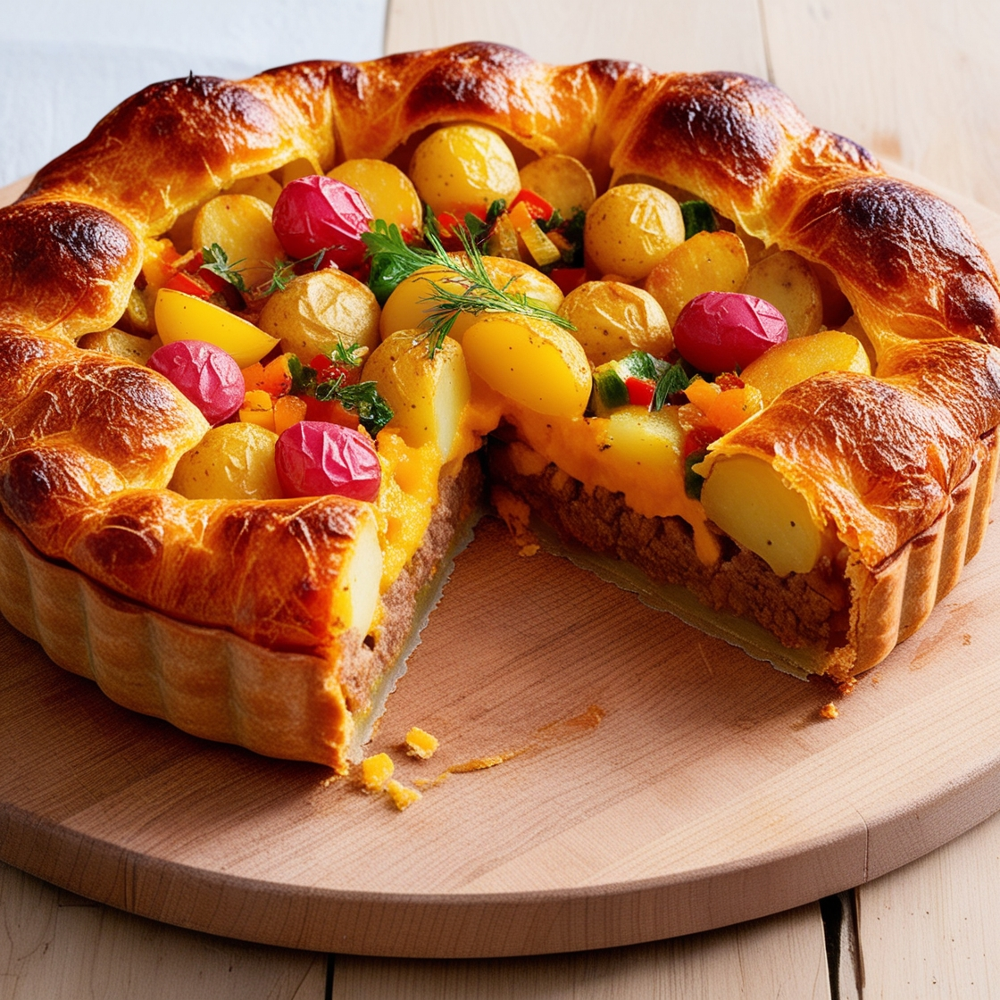
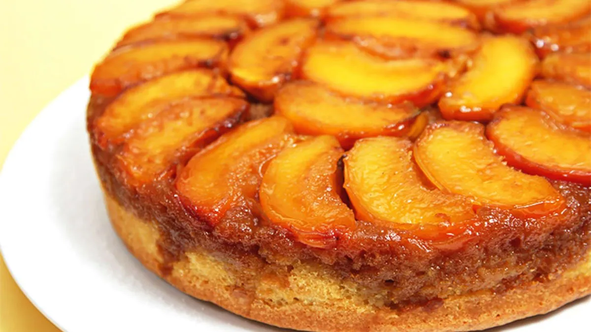

¡Este pastel de carne es un viaje nostálgico a la infancia! Un plato clásico que nos recuerda los menús caseros de nuestras madres, quienes con astucia lograban que comiéramos sin protestar. Imagina ese puré de patatas cremoso, el relleno de carne picada jugoso y el toque dorado del queso gratinado. ¡Una combinación irresistible para toda la familia!
Puedes prepararlo desde cero o aprovechar sobras de guisos y estofados, dándole una nueva vida a esos deliciosos sabores. ¡Un triunfo asegurado en cualquier mesa!
Esta Torta invertida de duraznos es un verdadero deleite para los sentidos, perfecta para una tarde de té o una celebración especial. Sigue nuestra receta paso a paso y sorprende a todos con esta exquisitez que combina lo mejor de la fruta fresca y la repostería casera. ¡No podrás resistirte a su sabroso encanto!

___ __ _ __ ___
/ / \ ( (` | |_/ / /\ | |_)
\_\_/ _)_) |_| \ /_/--\ |_| \